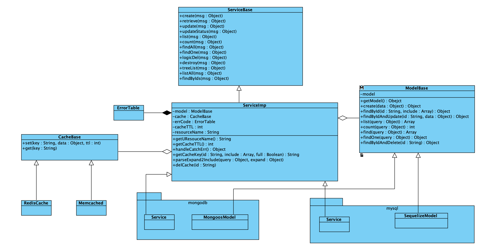

zhz-util
通过seneca提供类rpc的微服务。
- FCClient、FCService: 封装阿里云函数计算@alicloud/fc2 提供调用类似seneca的实例
- Service: 通过z-seneca-extended提供类rpc的api
Install
$ npm install zhz-util
Basic Usage
const { util, ServiceBase, ServiceImp, mysqlSeneca, mongodbSeneca, XmlUtil, FCService, FCClient } = require('zhz-util');
seneca service plugs
const { util, mysqlSeneca } = require('zhz-util');
const models = require('../../models');
const config = require('../../../config');
const model = models.Book;
module.exports = {
init: () => Promise.resolve(),
seneca(ctx) {
const resourceName = 'book';
const role = `${config.serviceName}.${resourceName}`;
const service = new mysqlSeneca.Service({
seneca: this,
model: new mysqlSeneca.SequelizeModel(model),
role,
cache: ctx.cache,
resourceName,
});
service.loadCmd();
service.addAsync('treeList', async function (msg) {
const { id } = msg.params;
const data = await this.model.findById(id);
return util.responseSuccess(data);
});
service.addAsync({
async treeList1(msg) {
const { id } = msg.params;
const data = await this.model.findById(id);
return util.responseSuccess(data);
},
async treeList2(msg) {
const { id } = msg.params;
const data = await this.model.findById(id);
return util.responseSuccess(data);
},
});
},
};
阿里云函数计算
const bunyan = require('bunyan')
const moment = require('moment')
const zhzutil = require('zhz-util')
const logger = bunyan.createLogger({
name: 'test',
streams: [{
level: 'info',
path: 'test.log',
}, {
level: 'debug',
stream: process.stdout,
}],
})
const accountId = ''
const options = {
accessKeyID: '',
accessKeySecret: '',
region: 'cn-shenzhen',
}
const zclient = new zhzutil.FCClient('test', 'test', {
accountId,
...options,
})
zclient.actAsync({
role: 'seneca.author',
cmd: 'create',
}, {
params: {
name: Math.random().toString(),
mobile: '13760471840',
sex: 'MAN',
},
}).then((ret) => {
console.log('zclient: ', ret)
})
Docs
$ pip install mkdocs
$ cd apidocs
$ mkdocs server

API约束
api的入参和出参统一采用json格式。api返回的JSON对象格式如下：
{
code: 0,
message: '',
status: 200,
data: {},
}
| 参数 | 类型 | 必填 | 默认值 | 描述 |
|---|---|---|---|---|
| code | Number, String | 是 | 无 | 0表示api调用成功，否则表示失败 |
| message | String | 是 | 无 | code=0为success；否则为错误描述 |
| data | Object, Array | 否 | 无 | api数据的返回值 |
| status | Int | 否 | 无 | 为http状态码，兼容restfule api用 |
API 说明
继承ServiceImp、mysqlSeneca.Service、mongodbSeneca.Service的类，会默认为生成api：create、retrieve、update、updateStatus、list、count、listAll、findOne、desctroy、findAll、findByIds。自定义api时请通过addAsync添加
资源list api格式
- 分页。参数
page表示获取第几页,默认为1。pageSize表示获取当前页的数据条.数默认为10。 - 排序。支持四种格式：array of
{ field: "", order: "DESC" }；array of[field, "DESC"]；object of{a: -1("DESC"), b: 1("ASC")}；sort=-a,b。例如按创建时间倒序-createdAt。 - 关键字查找。
search用于查找需要模糊匹配。例如在商品列表中，当search=可乐，我们将搜索商品中名称或品牌为可乐的商品。 - 范围查找。范围查找采用数学的范围表达方式
[表示大于等于；]表示小于等于；(表示大于；)表示小于；{a,b,c...}表示in查询；!{a,b,c...}!表示not in查询。例如查找库存数量大于等于100，小于200的商品数量，格式为depotQty=[100,200)。时间为[YYYY-MM-DD HH:mm:ss,YYYY-MM-DD HH:mm:ss] - 扩展数据。
expand拿资源相关的扩展数据时，在expand指明需要获取的扩展数据。例如列表员工数据，此时需要获取部门数据：expand=depantment，多个扩展数据使用逗号隔开。
list api 参数
| 参数 | 类型 | 必填 | 默认值 | 描述 |
|---|---|---|---|---|
| pageSize | Int | 否 | 1 | 每页条数 |
| page | Int | 否 | 10 | 当前页数 |
| limit | Int | 否 | 10 | 同pageSize |
| offset | Int | 否 | 无 | 起始条数 |
| sort | Array，Object, String | 否 | 无 | 排序。支持三种格式：array of { field: "", order: "DESC" }；array of [[field, "DESC"]]；object of {a: -1("DESC"), b: 1("ASC")}；sort=-a,b |
| search | String | 否 | 无 | 搜索关键字 |
| expand | String | 否 | 无 | 获取指定子资源数据，多个子资源使用逗号隔开。例如：expand=a,b |
list api 返回值
| 参数 | 类型 | 必填 | 默认值 | 描述 |
|---|---|---|---|---|
| pageSize | Int | 是 | 无 | 每页条数 |
| page | Int | 是 | 无 | 当前页数 |
| total | Int | 是 | 无 | 符合条件的总数量 |
| limit | Int | 是 | 无 | 同pageSize |
| offset | Int | 是 | 无 | 起始条数 |
| items | Array | 否 | 无 | 返回数据项 |